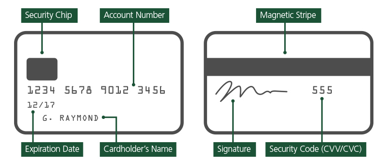
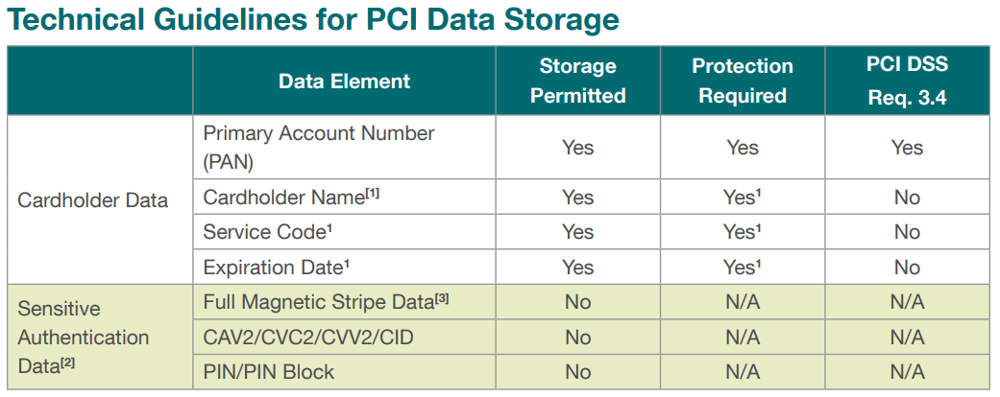
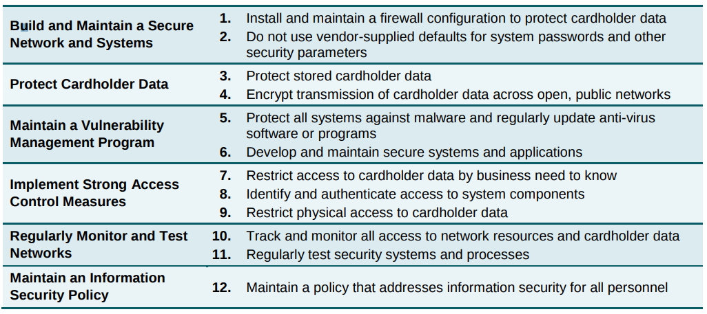

### E-Security 1 - PCI DSS #### Wintersemester 2017/2018 FH JOANNEUM
### Motivation und Geschichte (1) - Anfang 2000er: starker Anstieg bei Kreditkaren Betrug im Internet - 2001: Visa stellt ersten Standard vor; allerdings wenig Akzeptanz und Umsetzung - Ende 2004: PCI DSS 1.0 - Erster gemeinsamer Standard - Ende 2006: Gründung "PCI Security Standards Council" aller Top-Player und PCI DSS 1.1 <aside class="notes">Top Player: American Express, Discover, JCB International, MasterCard und Visa; neu in 1.1: Firewall notwendig und professioneller Review des Source Codes</aside>
### Motivation und Geschichte (2) - Eigener Vorstand und "Advisory Board" mit Top-Playern aus "Online Business" - Unregelmäßige Updates/Erweiterungen (derzeit Version 3.2 aus April 2016) - vor 2010 Akzeptanz von PCI DSS eher unterdurschschnittlich (technische Vorgaben, Audits, ...)
### Motivation und Geschichte (3) - Breites Spektrum an Guidelines für "Kreditkarten Branche" - Jährliches OnSite-Audit - mittlerweile kontinuierlicher Prozess über das ganze Jahr - Security Scans, Trainings, Reports, ...
### Spektrum an Standards - PCI PTS (Pin Transaction Security): Hersteller von Terminals - PCI PA-DSS (Payment Application Vendors): Software Hersteller - PCI P2PE (Point-to-Point Encryption): Spezialisert auf Datenübertragung - <strong>PCI DSS (Data Security Standard): speichern/verarbeiten/übertragen</strong>
### Die Kreditkarte 
### Was darf gespeichert werden 
### Merchant Level - Verschiedene Kategorien und Vorgaben seitens Visa - Level 1 = > 6Millionen TX pro Jahr: Vierteljährliche Security Scans und OnSite Audit
### PCI DSS 
#### Req 1: Install and maintain a firewall configuration to protect cardholder data - Netzwerksegmentierung durch Firewalls (Zonenkonzept) - Prozess zur Freigabe/Review von neuen Firewall-Rules - Up to date Netzwerkdiagramm (Changelog!) - Datenfluss einzeichnen
#### Req 1: Install and maintain a firewall configuration to protect cardholder data - Theorie und Praxis (Vergleich FW Rule review mit Wirklichkeit) - "Business justification" für schwache Protokolle - Aufzeichnung aller verwendeten (unsicheren) Ports und Protokolle - FW Review alle 6 Monate
#### Req 1: Install and maintain a firewall configuration to protect cardholder data - Beschränkungen für ein/ausgehenden Traffic ("Deny all") - Zugriff aus dem Internet nur in dedizierte Zone - Anti Spoofing und "established" connections - Beschränkung ausgehender Traffic
#### Req 1: Install and maintain a firewall configuration to protect cardholder data - aktive (Windows) Firewall - kann nicht deaktiviert werden
### PCI Song https://www.youtube.com/watch?v=xpfCr4By71U
### E-Security 1 - PCI DSS #### Wintersemester 2017/2018 FH JOANNEUM
### Quellenverzeichnis - PCI DSS 3.2: https://www.pcisecuritystandards.org/documents/PCI_DSS_v3-2.pdf